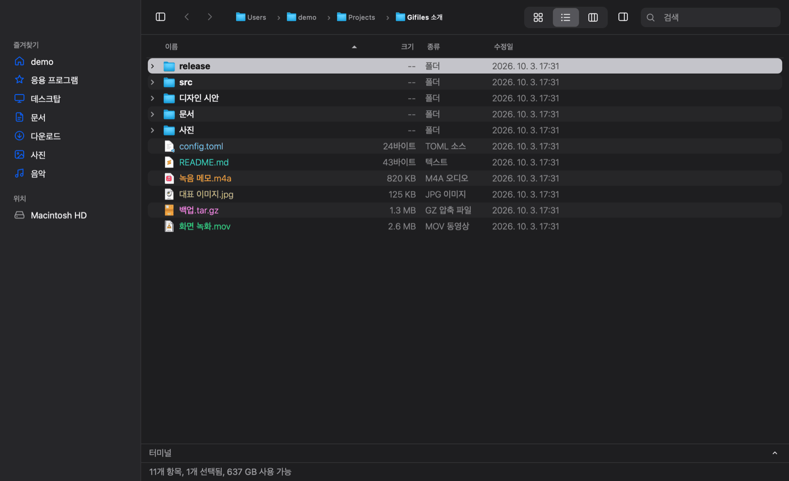
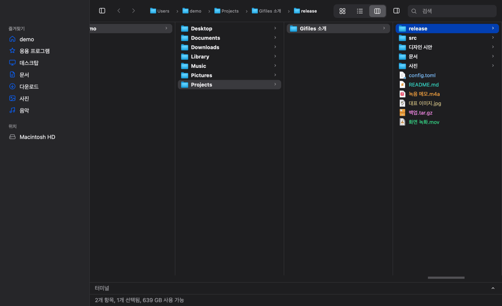
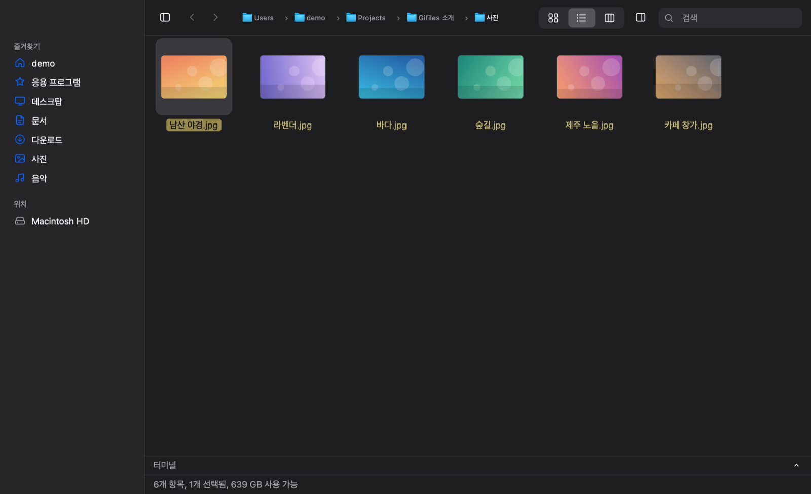
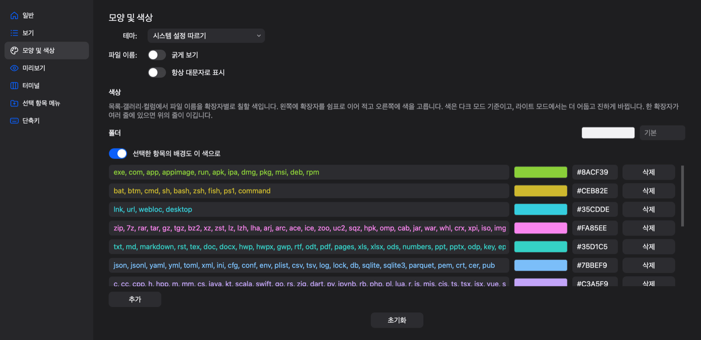
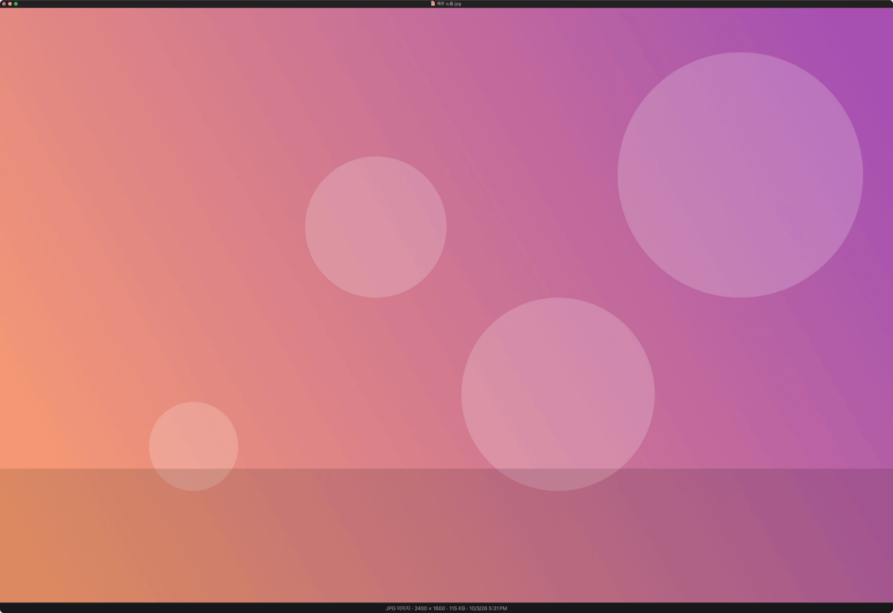
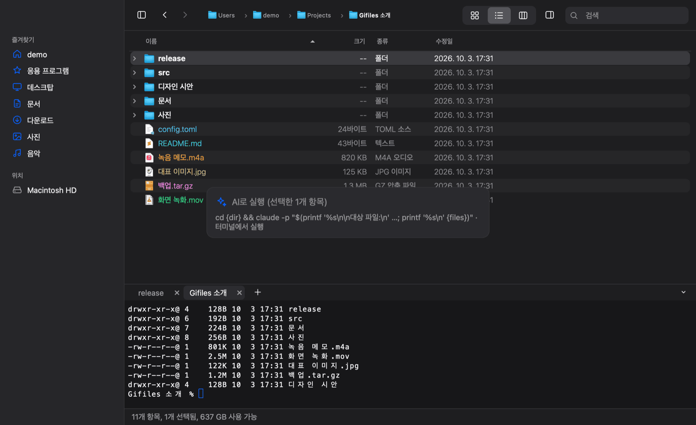
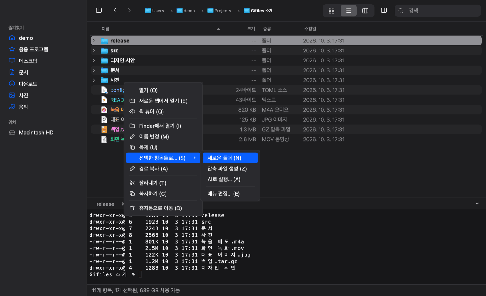
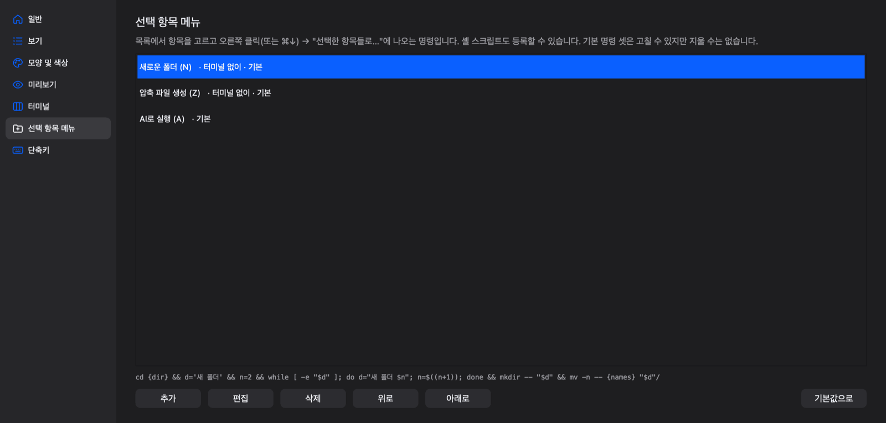
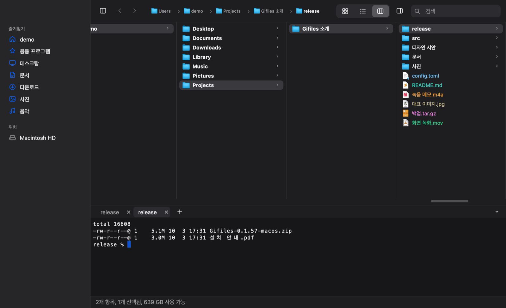

크로스 플랫폼 파일관리
GiFiles
macOS 파인더의 사용감을 다른 플랫폼에서도 쓰고 싶어 만든 유틸리티입니다. 자주 쓰는 기능 위주로 정리했고, 예전 MDIR 감성을 조금 끼얹었습니다. 터미널과 통합해 파일을 관리할 수 있습니다.
다운로드
Mac Finder 사용성 기준
목록·갤러리·컬럼 세 가지 보기와 ⌘1 · ⌘2 · ⌘3, Space 미리보기, Return 이름 바꾸기, ⌘↓ 열기까지 Finder 그대로입니다. 윈도우와 리눅스에서도 같은 키를 쓰고, ⌘ 자리에 Ctrl을 누르면 됩니다.


확장자별 색상
Mdir처럼 확장자마다 파일 이름에 색을 입혀 실행 파일, 압축 파일, 문서, 코드를 한눈에 구분합니다. 색과 확장자 묶음은 설정에서 바꿀 수 있고, 다크 모드에 맞춘 색이 라이트 모드에서는 자동으로 진해집니다.

퀵 뷰 내장
Space를 누르면 이미지·영상·음악·PDF·코드를 바로 보고, 방향키로 다음 파일로 넘어갑니다. 오피스 문서처럼 직접 그리지 못하는 파일은 운영체제의 미리보기를 그대로 씁니다.

AI 연동
파일을 고르고 요청을 한 줄 적으면, 터미널에서 Claude Code나 Codex 같은 AI 도구가 그 파일들을 대상으로 실행됩니다. 쓰려는 AI 도구를 설치하고 API 키 등록이나 로그인을 먼저 해 두어야 합니다.

사용자 메뉴
우클릭 → 선택한 항목들로…에 내 명령이나 스크립트를 등록해 두면, 고른 파일들의 경로를 셸에 맞게 안전하게 채워 실행합니다. 새 폴더로 묶기, 압축, AI 실행이 기본으로 들어 있습니다.


터미널 연동
목록 아래 터미널이 폴더를 옮길 때마다 따라서 cd 하고, 터미널에서 cd 하면 목록이 따라옵니다. 파일을 끌어 놓으면 따옴표 친 경로가 입력되고, 입력 중인 명령은 절대 덮어쓰지 않습니다.

다운로드
Windows 앱은 서명되지 않아 처음 실행할 때 경고가 뜰 수 있습니다(추가 정보 → 실행).